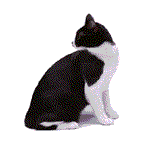
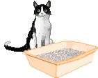
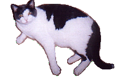
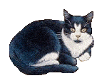
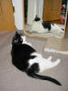
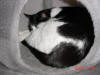
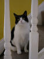
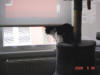

Oreo is our tuxedo
cat. She is about 6 years old and very shy around strangers. When we
first got her she wouldn't come out from under the bed. But over the
years she has come to trust us and become very brave, even if she still
won't let us pick her up!Oreo Facts!
|
 |
||||||||||||
|
 |
|||||||||||||
|
 |
Photos
|
   
|
You're so Vain
However much we like looking at Oreo, she likes looking at herself even more!
Copyright Fig 2026